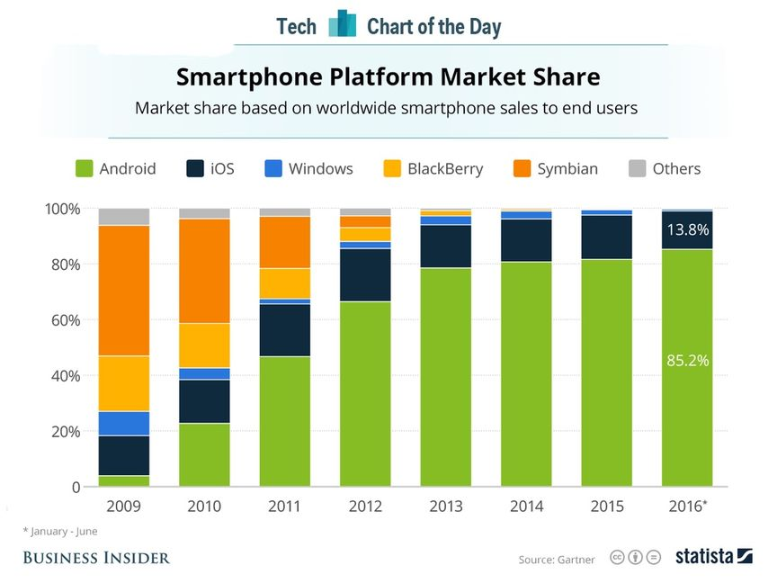
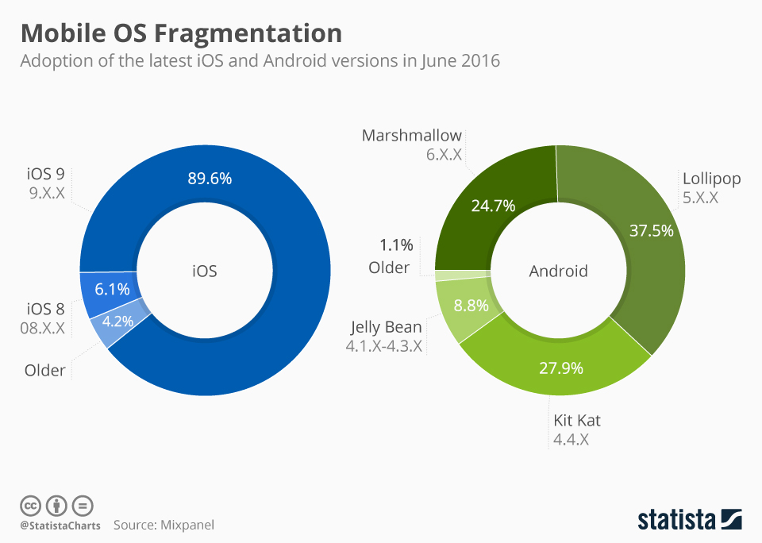
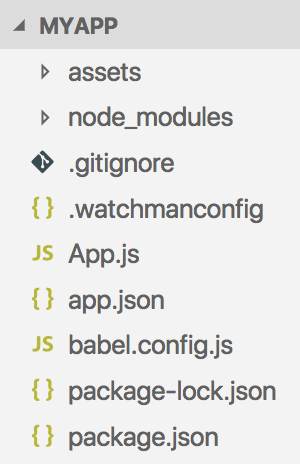
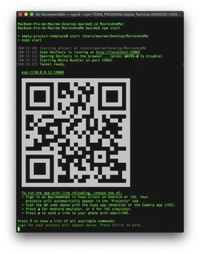
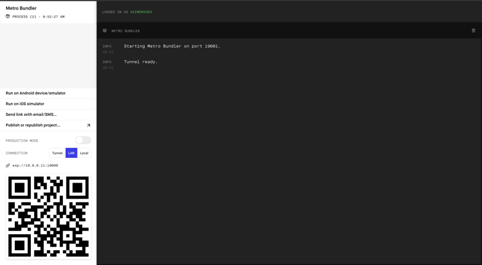

Introduction à React Native
Ecole Nationale Supérieure de Cognitique

Sommaire
- L’écosystème mobile
- Le JavaScript moderne
- Premiers pas avec React Native
L’écosystème mobile


Développement natif
Création d’applications en utilisant la technologie prévue par le concepteur de l’OS.
- Android : Java
- IOS : Objective-C ou Swift
Ces technologies sont incompatibles.
Avantages
- Accès à l’intégralité des fonctionnalités matérielles et logicielles du terminal mobile.
- Performances optimales.
Inconvénient (majeur !)
Nécessité de créer puis de faire évoluer une application pour chaque environnement.
Solutions hybrides
Création d’applications mobiles compatibles avec plusieurs OS mobiles grâce à un framework dédié.
Une application hybride est une application web qui s’exécute à l’intérieur d’un navigateur.
Exemples : Apache Cordova, Ionic
Avantages
- Fonctionnalités et performances proches de celles d’une application native.
- Economies de ressources pour créer l’application.
- Une seule base de code : maintenance et évolution facilitées.
Inconvénients
- Impossible d’accéder à certaines fonctionnalités matérielles ou logicielles spécifiques.
- Look’n’feel non natif.
- Mauvaises performances dans certains scenarii.
Développement natif multi-plateformes
Création d’applications mobiles compatibles avec plusieurs OS mobiles grâce à un framework dédié.
Le framework encapsule les véritables composants natifs de l’OS.
Exemples : React Native, Weex, Xamarin
Le meilleur des deux mondes ?
Combine les avantages du natif (look’n’feel, performances) et de l’hybride (une seule base de code).
Limite potentielle : le support de l’OS dépend entièrement du framework.
Le JavaScript moderne
Un pré-requis essentiel
La majorité des solutions mobiles multi-plateformes est basée sur JavaScript.
Les évolutions du langage
JavaScript est normalisé sous le nom ECMAScript.

La norme ES2015 (ou ES6) a apporté de très nombreuses améliorations au langage.
Let et const
Les mots-clés let et const remplacent avantageusement var pour la déclaration des variables.
La valeur d’une variable déclarée avec const ne peut plus être modifiée.
let a = 3.14;
a = 6.28; // OK
const b = 3.14;
b = 6.28; // Erreur!
Litéraux de modèle
Chaînes de caractères créées entre backticks et permettant d’intégrer des expressions.
const country = "France";
console.log(`I live in ${country}`); // "I live in France"
Fonctions fléchées
Nouvelle syntaxe pour créer des fonctions anonymes.
// Syntaxe classique
const hello = function(name) {
const message = `Hello, ${name}!`;
return message;
};
// Utilisation d'une fonction fléchée
const hello = name => {
const message = `Hello, ${name}!`;
return message;
};
console.log(hello("Richard")); // "Bonjour, Richard!"
Classes
class Character {
constructor(name, health, strength) {
this.name = name;
this.health = health;
this.strength = strength;
}
describe() {
return `${this.name} has ${this.health} health points
and ${this.strength} as strength`;
}
}
const aurora = new Character("Aurora", 150, 25);
console.log(aurora.describe());
Appels asynchrones
Une promesse (promise) est un objet qui encapsule une opération dont le résultat n’est pas encore connu.
// Envoie une requête HTTP asynchrone vers l'URL spécifiée
fetch(url)
.then(() => {
// Code appelé ultérieurement si la requête réussit
})
.catch(() => {
// Code appelé ultérieurement si la requête échoue
});
Consommation d’API web
// Envoi d'une requête HTTP asynchrone vers l'URL spécifiée
// La réponse est reçue sous forme de données JSON
fetch("http://my-api-url")
.then(response => response.json()) // JSON vers JavaScript
.then(content => {
// Utilisation de la réponse
// ...
})
.catch(err => {
console.error(err.message);
});
Modules et imports
JavaScript supporte la notion de module pour factoriser des éléments réutilisables.
// Importe l'élément exporté par défaut par le module
import React from "react-native";
// Importe d'autres éléments exportés grâce à leur nom
import { View, Text, Image } from "react-native";
// Importe à la fois l'élément par défaut et d'autres éléments
import React, { View, Text, Image } from "react-native";
Les outils
- Gestion des dépendances : npm (ou yarn).
- Edition du code : Visual Studio Code.
- Formatage du code : Prettier.
- Analyse du code : ESLint.
Premiers pas avec React Native
React Native
Framework créé par Facebook, open source depuis 2015.
Déclinaison mobile du framework JavaScript React.
Utilisation de l’outil Expo CLI associé à l’application mobile Expo pour le déploiement sur mobile. Expo CLI a remplacé l’outil Create React Native App (CRNA) en septembre 2018 (détails). Création d’une application
# Avec npm
npm install -g expo-cli
expo init MyApp
Contenu du répertoire créé
Le fichier principal : App.js
import React from "react";
import { StyleSheet, Text, View } from "react-native";
export default class App extends React.Component {
render() {
return (
<View style={styles.container}>
<Text>Open up App.js to start working on your app!</Text>
</View>
);
}
}
const styles = StyleSheet.create({
container: {
flex: 1,
backgroundColor: "#fff",
alignItems: "center",
justifyContent: "center"
}
});
Déploiement d’une application
cd MyApp
npm start
Ensuite, scan du QR Code depuis l’application Expo (Android) ou l’appareil photo du smartphone (iOS).

Détails sur le déploiement
- L’application est hébergée sur un serveur web local.
- Expo s’y connecte pour la récupérer puis la lancer.
- Une interface de gestion s’affiche dans le navigateur web local.
